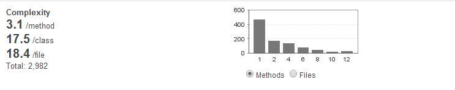
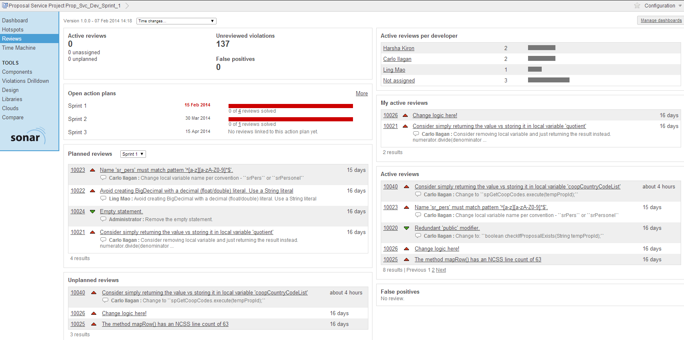
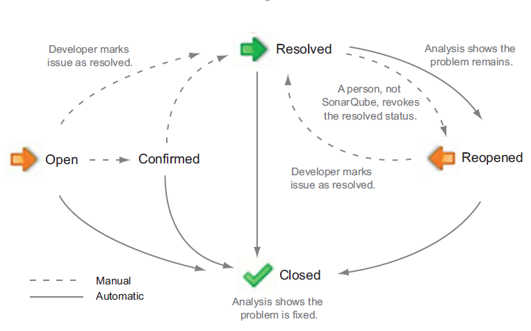

Code Reviews with SonarQube
Agenda
- Continuous Inspection
- Technical Debt
- 7 Axes of Quality
- Sonar Dashboard and Widgets
- Sonar Code Review Tools
You can't MANAGE
what you don't MEASURE.
But...
How do we MEASURE code quality?
Code Reviews

What is Sonar?
- a software quality management platform primarily for Java programming language
- enables developers to access and track code analysis data
- everything that affects the code base, from minor styling details to critical design errors, is inspected and evaluated by Sonar.
- makes code quality trackable and trendable
- it includes CODE REVIEW tools!
Continuous Integration
Continuous Inspection
Developer's 7 Deadly Sins
- Bugs and Potential Bugs
- Coding Standard Breach
- Duplications
- Lack of Unit Tests
- Bad Distibution of Complexity
- Spaghetti Design
- Not Enough or Too Many Comments
Technical Debt
cumulative cost of work that's been put off or done poorly enough that it needs to be refactored.
Technical Debt
7 Axes of Quality
- Coding rules—respect coding standards and follow best practices
- Potential bugs—eliminate code violations to prevent vulnerabilities
- Test coverage—writes unit tests, especially for complex parts of the software
- Duplicated code—isolates and refines duplications, Don't Repeat Yourself
- Complexity—equalizes disproportionate distributed complexity among components; eliminates complexity if possible
7 Axes of Quality (continued)
- Design and architecture—minimize dependencies
- Documentation and comments—provide documentation especially for the Public API, the source code
Sonar Dashboard
Sonar Dashboard Widgets
Potential Bugs and Coding Standards
- Coding rules—respect coding standards and follow best practices
- Potential bugs—eliminate code violations to prevent vulnerabilities
Sonar Dashboard Widgets
Test Coverage
- Test coverage—writes unit tests, especially for complex parts of the software
Sonar Dashboard Widgets
Comments and Duplications
- Duplicated code—isolates and refines duplications, Don't Repeat Yourself
- Documentation and comments—provide documentation especially for the Public API, the source code
Sonar Dashboard Widgets
Complexity

- Complexity—equalizes disproportionate distributed complexity among components; eliminates complexity if possible
Sonar Dashboard Widgets
Dependencies
- Design and architecture—minimize dependencies
Code Reviews
- Why
- Who
- When
- Where
- How
Reviewing Code in
Sonar
- Hotspots Dashboard - tackle issues by priority
- Code Review Tools
- Assign Review Tasks
- Create Comments
- Flag False Positives
- Assign Manual Issues
- Create Action Plans
- Tracking Issues using Reviews Dashboard
- Issue Lifecycle
Hotpots Dashboard
Provides ability to focus on classes that have findings against a metric
Drill Down
Let Sonar drive your code review.
Code Review Tools
- Assigning Review Tasks
- Creating Comments
- Flagging False Positives
Code Review Tools
- Assign Manual Issues
Code Review Tools
- Create Action Plans
Tracking Issues using Reviews Dashboard

DEMO
Issue Lifecycle

A Few Take Aways
- BEFORE the group code review, encourage developers to do their own code review using Sonar.
- Use Sonar and code reviews to help your team develop discipline and maturity as software developers (less 7 deadly sins!).
- Let Sonar drive your code reviews. Leverage the Sonar issue management/workflow to track issues.
- If overwhelmed, focus on one or two metrics first as a team.
- Budget some time to refactor and tackle technical debt.
- When refactoring always apply the Boy Scout Rule: "Always leave the campground cleaner than you found it".
- We barely scratched the surface on Sonar so try it out yourself!
THE END
Print to PDF (Use Chrome)